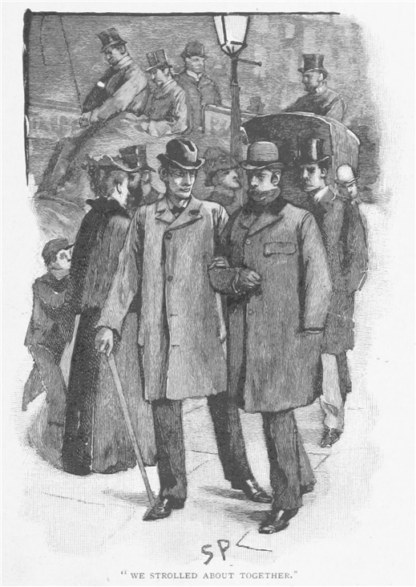
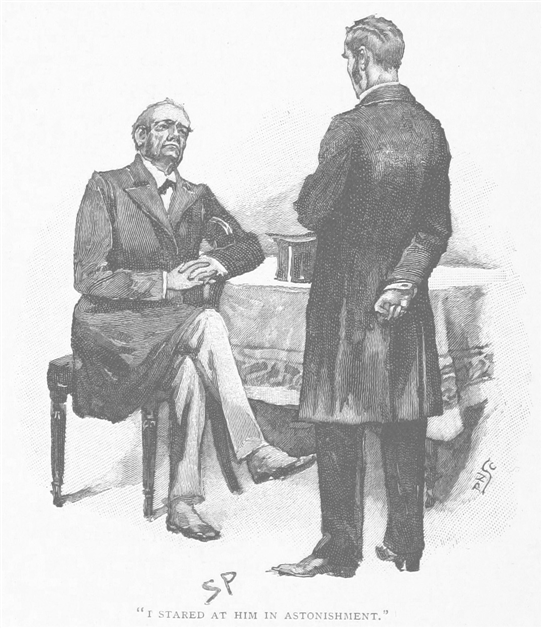
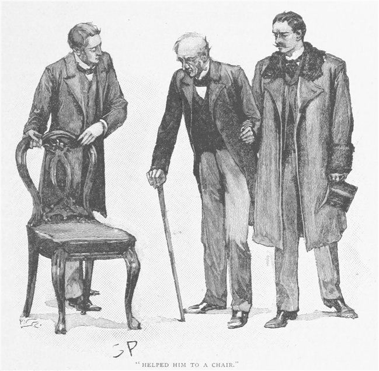
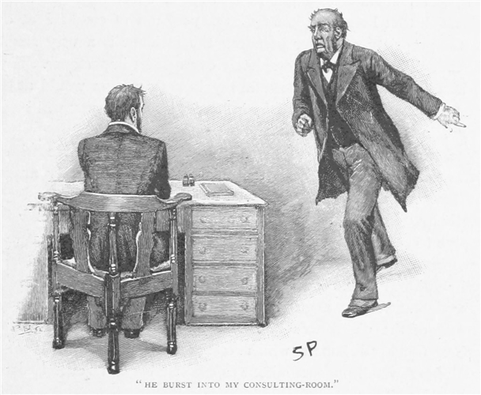
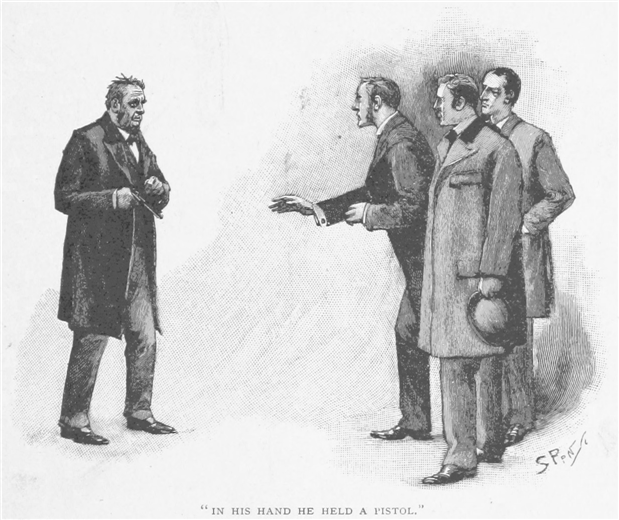
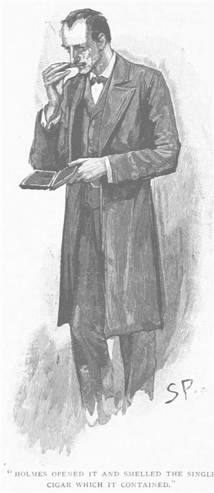
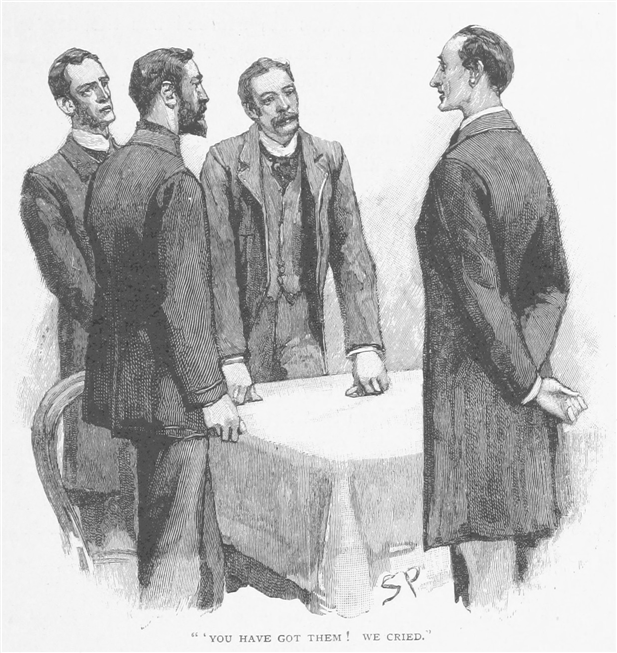

それなりに種々雑多な記録をひと通り思い浮かべて、我が友人シャーロック・ホームズ特有の知性をいくらか説明しようと思うのだが、今、私は悩んでいる。希望を完全に満たしてくれるような具体例がなかなか見つからないのだ。というのも、ホームズが分析的推理を見事に発揮した事件や、その独特の捜査方法の真価を見せつけたような事件というのは、しばしばその真相そのものがあまりにも薄っぺらで陳腐なものであるため、わざわざ世間の皆様にお伝えすべきこととも思えないからだ。一方で、手がけた事件のなかでも数少ない、図抜けてめずらしい劇的なものというのは、決まってそうなるのだが、私が伝記作家として欲しいと思っているにもかかわらず、本人が事件解決の仕事ぶりをあまり話してくれない。私が以前『緋のエチュード』と題して記録したささやかな本や、そののちのグローリア・スコット号の消失に関する一編は、語り部を永遠に脅かす岩のスキラと渦のカリブディスのよい例になるかもしれない。ひょっとすると、私がこれから語る出来事において、我が友人の果たした役割はあまり中心的でないかもしれない。それでもなお、事の次第がめずらしいものであるので、この連載から完全に割愛する気にはどうしてもなれないのだ。
正確な日付に自信はない。この事件についての備忘録をなくしてしまったからだが、ホームズと私がベイカー街で同居していた最初の期間の終わり頃であったに違いない。一〇月の天気も大荒れで、ふたりとも一日中、部屋に閉じこもっていた。私は体調がすぐれなかったので、厳しい秋風にさらされては大変と思っていたからなのだが、ホームズの方は難しい化学の研究といったものに没頭しており、それに取り組んでいるあいだはまったく他のことを忘れてしまうからだった。だが夜に差し掛かる頃、一本の試験管が割れ、実験が頓挫してしまった。ホームズは我慢ならないとばかりに声を上げて椅子から立ち上がり、晴れぬ顔をする。
「一日の努力が無駄になったよ、ワトソン。」とホームズは窓の方へつかつかと歩く。「ほう！ 星が出て、風も凪いでいる。どうだろう、ロンドンを巡り歩くというのは？」

私もこの小さな居間にうんざりしていたので、喜んでうなずいた。三時間ふたりで辺りをふらついた。フリート街やストランド街を通って、満ち干きするように絶えず変わりゆく人生の万華鏡を眺めた。細部を鋭く観察して巧みに推理する、ホームズにしかできない雑談だが、私は大いに楽しみ、心奪われた。ベイカー街に帰宅したのは一〇時過ぎ、ブルーム型馬車が戸口に停まっていた。
「ふむ！ 医者か――全科診療の開業医と見た。」とホームズは言う。「開業して日は浅いが、結構はやっている。相談事がある、ということか！ いいところに帰ってきた！」
私はホームズの推理方法についてそれなりに知っているので、その推理を追うことができた。様々な医療器具が柳の籠に入っていて、街灯でブルームの内部につるされているのがわかる。その性質と状態が根拠となって素早く演繹できたのだ。上に見える我々の部屋の明かりで、この夜分の訪問者が我々に会いに来たとはっきりする。こんな時間に同業者が来るとは何事だろうと多少の興味を抱きつつ、私はホームズを追って、ふたりの私室へ向かった。
砂色の頬髯をたくわえた男が、その細長い顔を真っ青にして暖炉わきの椅子から立ち上がったのは、我々が入ると同時だった。歳は三三、四より上ではなさそうだったが、やつれた表情と不健康そうな顔色から、現実にその力を搾り取られ、若さを奪われたのだと教えてくれる。所作はいらいらもじもじとしていて、神経質な紳士を思わせ、立ち上がるとき炉棚に載せた白い手は、医者というよりむしろ芸術家の手だった。服装はおとなしく地味で――黒いフロック・コートに黒めのズボンで、ネクタイにわずかに色があるだけだ。
「こんばんは、先生。」とホームズは朗らかに言った。「お待たせしたのは数分だけのようで、幸いです。」
「御者にお訊きですか？」
「いえ、教えてくれたのは、壁際の机にある蝋燭です。どうぞ座ったままで、私へのご依頼をお聞かせください。」
「私は医者のパーシィ・トリヴェリアンと申すものです。」と私たちの訪問客は言った。「ブルック街四〇三番地に住んでおります。」
「原因不明の神経障害について論文をお書きの、あの？」と私は訊いてみた。
彼の青白い頬が、自分の仕事を知っているという私の言葉を聞いて、うれしさで赤くなる。
「その論文についてはもう話も聞かないので、埋もれたものと思ってました。」とその医師は言う。「出版社は売れ行きは思わしくないと言っていて。あの、もしかして、あなたご自身も医療に？」
「退役軍医でして。」
「これは趣味なんですが、ずっと神経疾患をやっています。私としてはそれだけを専門にしたいのですが、もちろん、まずちゃんと稼いでおかないといけませんし、いや、この話は横に置いておいて、シャーロック・ホームズさん、貴重なお時間であることは重々承知です。実はですね、とても妙な出来事が、ブルック街の自宅で近頃立て続けに起こっておりまして、今度はもう化膿してつぶれそうでしたので、私は居ても立ってもいられなくなって、あなたのご助言とご協力を仰ぎに来たんです。」
シャーロック・ホームズは腰を下ろして、パイプに火をつけ、「よくぞいらっしゃいました。」と言う。「あなたがお困りになっているご事情を、詳しくご説明いただけますか。」
「ひとつふたつはつまらないことで。」とトリヴェリアン医師は言った。「本当にお話しするのもお恥ずかしい。ですが、事件自体が不可解で、起こったばかりの新展開が込み入ってきて、ですから、洗いざらいお話ししようと思っていて、必要かそうでないかは、おふたりに判断していただこうと。
始めるにあたって、私の大学時代について、いくらかお話ししておかなければなりません。私は、よくご存じのロンドン大学の出で、けして見栄を張ろうというのではないのですが、その、学生の時分は教授たちから将来を嘱望されておりました。卒業後もそのまま研究に身を捧げまして、キングス・カレッジ病院にささやかな職を得ておりました。幸いにも強硬症の病理を研究することで相当の注目をいただきまして、とうとうブルース・ピンカトン賞を、先ほど触れていただいた神経障害の論文でいただいたのです。ですから、私の前途は洋々であると一般に思われていたと言っても、言い過ぎではないでしょう。
しかし、大きな
それというのも、ブレッシントンという名の紳士から訪問を受けたのです。まったく存じ上げない方でした。ある朝、私の部屋にやってきて、いきなり話を切り出しました。

『あなたが例のパーシィ・トリヴェリアンですね、成績優秀で、近頃大きな賞をお獲りになったという？』と相手が言いましたので、
私はそうですとお辞儀を。
『正直にお答えを。』と話を続けます。『その方があなたの得になるのですから。出世に必要な知性はじゅうぶんお持ちだ。人当たりはいい方ですか？』
私はそのぶしつけな質問に、思わず笑みをこぼして、
『相応にはあるつもりです。』と答えました。
『悪い癖は何か？ お酒に惹かれたりはしないかね、ええ？』
『もちろんですとも。』
『至極結構！ そりゃ結構です！ だがここで聞かねばなりません。そんな資質がありながら、どうして開業なさらん？』
私は肩をすくめました。
『そうかそうか。』と相手は独特のせわしない調子で言いまして、『よくある話だ。頭にはいっぱい詰まっとるが、懐の方は、とな？ あなたさえよければ、わしがブルック街に開業させてやりましょう。』
私はびっくりして相手を見つめました。
『いや、これはわしのためで、あなたのためじゃない。』と声を大きくするのです。『もう率直に申しましょう。あなたに都合いい話なら、わしにとっては抜群にいい話なのです。ここに投資したい金が数千ある、ほれ、そこでわしはあなたにつぎ込もうと思っとる。』
『しかし、なぜ？』と私は息を詰まらせました。
『なに、たいていの投機と同じことですよ。もっと堅いかもしれん。』
『では、私は何をすれば？』
『お話ししましょう。わしは家を手に入れて、調度を揃える、お女中の給金を払う、つまりその場の取り仕切りを全部やる。あなたのやることといったら、診察室で椅子をすり減らすことだけです。小遣いも何もわしがすべて世話をする。その代わり、稼ぎの四分の三をわしに渡すこと。残りの四分の一があなたのものだ。』
こんな奇態な提案を、ホームズさん、ブレッシントンという男が持ち込んだんです。やりとりや取り決めの子細をくどくどと申し上げることは致しません。次の受胎告知記念日には私が引っ越すことに落ち着き、まったく提案通りの条件で開業することになりました。そして彼は、私と同居しに来たのです。患者兼同居人という格好でした。どうも彼は心臓が弱いらしく、常時医者の監督が必要だと。二階にあるいちばん良い部屋を二室、自分の居間と寝室に改めました。彼は妙な癖のある男で、人付き合いを避け、外出も滅多にしません。生活も不規則でしたが、ある一点だけは規則そのものでした。毎晩、同じ時間に診察室へ入ってきて、帳簿を調べ、私の稼ぎとして一ギニィに五シリングと三ペンス置いて、残りを持っていって、自分の部屋の金庫にしまうのです。
断言してよいと思いますが、その投機を後悔させるような理由はただの一度もありませんでした。それは初めから成功でした。病院時代から得ていた評判や、幾人かの良い患者のおかげで、たちまち有名となり、ここ数年のあいだで私はあの男を資産家にしたのです。こんなところが、ホームズさん、今までの流れとブレッシントンさんとの間柄です。ここで最後にお話ししたいことというのが、今夜、私がここへ来た直接の動機なのです。
何週間か前、ブレッシントンさんが私のところへやってきて、どうも見たところ、相当に動揺した状態で、彼の話では、ウエスト・エンド界隈で押し込みの窃盗があったというのです。そこで、印象に残っているのですが、どうも必要以上に興奮なさっていて、今日のうちに私たちも窓や扉に頑丈な閂を取り付けねばと言い張られまして。一週間のあいだはずっと妙に落ち着かない様子で、しきりに窓から外をのぞいて、いつも夕食前になさっていた短い散歩もおやめに。挙動からふと考えたのは、彼は何か、もしくは誰かを病的に恐れているのでは、ということです。ですが、その点を問いだたしてみても、気を悪くするので、その話題をやめるしかありませんでした。やがて時が過ぎるうち、その恐れも静まっていったようでしたが、また元通りになってしまって。新たな出来事が、哀れにも彼の心を折ってしまい、今もそのままなのです。
起こったことというのはこうです。二日前、私は手紙を受け取ったのですが、ここで読み上げましょう。住所も日付もありませんでした。
イングランドに在留中のさるロシア貴族が、パーシィ・トリヴェリアン先生のご診察をぜひ受けたいとお思いです。その人物は数年来、強硬症の発作に悩まされており、周知の通り、トリヴェリアン先生はその病の大家でいらっしゃいます。明日 、午後六時一五分頃お伺い致したいと存じますが、トリヴェリアン先生におかれましては、ご在宅のほどお願い申し上げます。
この手紙に私は深い興味を持ちました。なぜなら、強硬症の研究にとってのいちばんの難点は、滅多にない病気だということです。ですからおわかりでしょうが、私は診察室で待ち、指定の時刻になると、手伝いの少年が患者をなかへ招き入れました。
来たのは初老の男で、痩せておとなしい普通の人物で――どこにもロシア貴族といった風情はありません。それよりももっと印象的だったのは、付き添いの男の風采です。背の高い若い男で、驚くほど屈強で、顔は浅黒く恐ろしげ、手足と胸はヘラクレスのようでした。
彼は患者を肩により掛からせながら入ってきて、静かに椅子へ腰掛けさせるのですが、その優しさといったら、その外見からはまったく想像もつかないほどです。

『失礼致します、先生。』と、わずかに舌のもつれた英語で私に話しかけます。『これは私の父で、私にとって父の健康は、何事より大事なことなのです。』
私は、その子としての心痛にいたく感動しました。『よろしければ、診察にお立ち会いになりますか？』と私は言いました。
『とんでもない。』彼は恐ろしそうな身振りで声を張り上げます。『つらくてつらくて、言葉にできないくらいです。父の恐ろしい発作を見るなんて、もう絶対に生きた心地がしません。私の神経系はきわめて過敏でして、お許しいただいて、父を診ていただいているあいだは、待合室にいようと思います。』
これについてはもちろん認めまして、そして若者は退室しました。そこで患者と私はさっそく症状の話から始め、私は熱心に覚え書きを取りました。患者にあまり高い教養はないらしく、たびたび受け答えがわかりにくくなりましたが、それは私たちの言語の知識が限られているせいだと思います。しかし不意に、私が椅子に座って書いていると、質問に対する答えが返ってこなくなりまして、そこで彼の方を振り返ると、見て衝撃を受けたのですが、椅子に座ったまままっすぐ背を伸ばして、私の方をまったくの無表情のこわばった顔で見つめるのです。彼はまたその謎の症状に見舞われているのです。
最初に感じたのは、言わせていただければ、同情と、恐怖といったものです。次に来たのは、すいませんが、むしろ学問的な満足感でした。患者の脈拍や体温を記録して、筋肉の硬直具合を試し、反射を調べました。これらの条件ではいずれもとりたてて異常なところはなく、これまでの経験と一致していました。こうした場合、これまで亜硝酸アミルを吸入させるとよい結果が得られていたので、今回もその効果を試す絶好の機会だと思いました。瓶は階下の実験室にありましたので、患者を椅子に残して、取りに走り降りていきました。見つけるのに少々手間取りまして――五分、でしょうか――そのあと戻りました。すると驚いたのなんの、部屋は空で、患者はどこかへ行ってしまったじゃありませんか。
もちろん最初にしたことは、待合室へ飛び込むことです。息子もどこかへ行っておりました。広間の戸が閉まってはいましたが、鍵はかかっておらず、患者を中に入れた手伝いの者は新入りの少年で、飲み込みが悪いのです。階下に待っていて、診察室で呼び鈴を鳴らすと患者を外へ送るために上がってくるのです。少年は物音は聞いておらず、その件はまったく謎のままでした。ブレッシントンさんはそののち日課の短い散歩から帰ってきましたが、この件については伝えませんでした。というのも、実のところ、彼とはできるかぎり話をしないようにするというのが、最近の方針なのです。
さて、このロシア人親子についてはこれ以上何もないだろうと思っていたので、驚いたのなんの、まさに今晩の同じ時刻に、ふたりが診察室に堂々と入ってきたのです。以前とまったく同じように。
『どうも昨日は、突然帰ってしまって本当に申し訳なく思っております。』と、その患者は言いました。
『正直、びっくりしてしまいましたよ。』と私は答えました。
『その、実はですね。』と患者は話し出します。『例の発作が起きたあとは、いつも心に雲がかかったようになって、直前にあったことはみんなどうも……。気がついたら変な部屋にいて、私にはそう思えて、あなたのいないあいだに、どこかぼうっとしたまま通りへ出てしまったんです。』
『一方で私は、』と息子も話します。『父が待合室の戸を入ってくるものですから、てっきり診察は終わったものと思いまして、家に帰り着いてようやく、事の真相に気づき始めた次第で。』
『いや、なに。』と私は笑いながら答えました。『ひどくびっくりはしましたが、実害はありませんから、それではよろしければ待合室に入っていただいて、前回中途で終わりになった診察の続きをさせてもらえれば幸いです。』
三〇分ばかりのあいだ、私はその老紳士と症状について話し合い、そのあと処方を出すと、患者は息子の腕を頼りに出て行きました。
そこでお話ししておきたいのは、ブレッシントンさんはいつもその散歩する時間が一日のあいだで決まっているということです。そのあとすぐに帰ってくると、階上へ上がっていきました。少し経つと、走り降りてくる物音が聞こえ、私の診察室に飛び込んできたのです。混乱して我を失っているように見えました。

『わしの部屋に入った野郎はどいつだ？』と彼が怒鳴ったので、
『いえ、誰も。』と私は答えたんです。
『嘘をつけ！』とわめき散らしまして、『上がってきてみろ！』と。
乱暴な言葉遣いについては流しました。恐怖に半分正気を失っているときにはいつもそうです。彼と一緒に上へ行くと、彼は明色の絨毯についたいくつかの足跡を指さしました。
『これがわしのだとでも言うのか？』と、彼はなおも怒鳴りました。
それは確かに彼が今までつけたものより遥かに大きいもので、おまけにどう見てもごく新しいものでした。ご承知のように、今日の午後は雨降りで、患者は外来の人だけでした。とすると、事実はこうなるはずです。待合室にいた人物が、何かよくわからない理由で、誰か別のものでかかりきりのあいだに、患者兼同居人の部屋へ上がったのだと。触れられたり盗まれたりしたものはありませんでしたが、足跡の存在が、侵入を紛れのない事実だと証明しています。
ブレッシントンさんはこの件について私の想像以上に気が立ったらしく、もっとも、こんなことがあれば誰だって心の平静をかき乱されるのが普通です。実際、彼は肘掛椅子に腰掛けたままわめき散らし、筋の通ったことを話してもらうことは不可能でした。そこで何やらあなたのところへ寄ってこいとかそのようなことを行って、もちろんすぐに私もその方がよいと思いまして、というのもきわめて変わった出来事ですし、もっとも彼はまったくのところ重く見過ぎなところがあるのですが、もしよろしければ、私のブルームで自宅までご一緒いただければ、少なくとも彼は落ち着いてくださると思います。別にこのめずらしい出来事を説明できずとも構いませんので。」
シャーロック・ホームズは依頼人の長い話を熱心に聞いていた。その様子を見て、強く惹かれ始めていると見て取った。いつもより深い煙を巻き上げ、医師の話すひとつひとつの奇妙な挿話を盛り上げる。依頼人の話が終わると、ホームズは物も言わず立ち上がり、私に帽子を手渡し、自分のを卓上より拾い上げて、トリヴェリアン氏に続いて戸口へ向かった。二五分も経たぬうち、我々はブルック街にあるこの医師の住まいの戸口に降り立った。地味で、正面の平坦な家で、ウェスト・エンドの開業医宅の典型と言えそうだった。手伝いの少年が中へ入れてくれ、すぐに上等の絨毯を敷いた広い階段を上り始めた。
だが、妙な邪魔が入って我々は立ち止まることになった。階段の上についている明かりが不意にぱっと消えて、暗闇のなかから甲高い震えた声がしてくる。
「こっちには拳銃がある！」という大声。「嘘じゃないぞ！ それ以上近づいたら……」
「なんて無礼なことをなさるんです、ブレッシントンさん。」とトリヴェリアン医師は声を上げる。
「やや、その声はあなたですね、先生。」と、声の主は大きくほっと息をつく。「ですが、そこのやつらは何をしに来たんです？」
しばらく闇のなかから強烈な視線を感じる。
「そうかそうか、結構だ。」と、やがてその声は言った。「上がってください。私の用心で気を悪くしたら申し訳ない。」
声の主はそう言いながら階段の明かりを再びつけた。我々の視界に、妙な格好の男が現れ、声と同じようにその顔は乱れた神経を物語っていた。ひどく肥えていたが、かつてはもっと太っていたようで、目の下の皮がたるんで顔にぶら下がっていて、ブラッドハウンドの頬を思わせた。肌の色は不健康で、髪の毛も薄く砂色、男の緊張がいかに張りつめているかが分かる。手には拳銃を持っていたが、我々が近寄ると懐に突っ込んだ。

「こんばんは、ホームズさん。」と男は言った。「来ていただいて本当にありがたく思っております。これまでわしほどあなたの助けを必要とした人間はありませんよ。おそらくトリヴェリアン先生があなたに、私の部屋にけしからん不法侵入があったとお伝えでしょう。」
「無論。」とホームズは言う。「その二人の男とは何者です、ブレッシントンさん。そしてなぜあなたを苦しめようとするのです。」
「ええ、ええ。」この患者兼同居人は神経質そうに答える。「もちろん言葉にもできませんで、わしにお答えを期待なさらない方がいいでしょう。」
「ご存じない、という意味ですか？」
「こちらへ、どうぞどうぞ。中へ入っていただけるとありがたいです。」
男は我々を自分の寝室へ連れて行った。その部屋は大きく、調度もみな揃ってた。
「ご覧ください。」男は寝台の裾にある大きな黒い箱を指さす。「わしは決して金持ちではありません、ホームズさん――生涯にした投資もこれきりで、トリヴェリアン先生からお聴きでしょうか、ですがわしは銀行を信用してなくて、絶対に銀行なんて信頼しちゃならんのです、ホームズさん。ここだけの話ですが、わしのささやかな所持金はあの箱のなかで、だからおかかりでしょう、見知らぬ人間が部屋に押し込むというのが、わしにとっていかなる意味なのか。」
ホームズはもの問いたげな様子で、ブレッシントンを眺め、やがて首を振って、
「僕はご相談に乗れません。あなたが嘘をおつきになる以上は。」と言った。
「いえ、すべてお話ししました。」
ホームズは嫌悪感もあらわにきびすを返し、「おやすみなさい、トリヴェリアン先生。」と声をかける。
「わしはいったいどうすれば？」とブレッシントンの涙声。
「どうする、そうですね、真実をお話ください。」
数分ののち、我々は街へ出て、家路をたどりつつあった。オックスフォード街を横切り、そしてハーリィ街を中ほどまで下ると、ようやく友人から言葉を聞けた。
「あんな愚か者の用事に君をつきあわせて申し訳ない、ワトソン。」というホームズの言葉。「興味深い事件ではある。突き詰めればだが。」
「私にはちっともわからん。」と私は白状した。
「うむ、きわめて明白なのは、二名の男が――いや、ひょっとすると少なくとも二名だな――その者どもが、何らかの理由であのブレッシントンとかいう男に狙いを定めきっていることだ。これも僕の考えでは間違いないのだが、一度目、二度目、どちらの機会にも若い男がブレッシントンの部屋に忍び込んでいる。そのあいだ、共謀者は巧みな計略で、あの医者に邪魔をされないようにしていたのだ。」
「強硬症は？」
「騙そうとその振りをしたのだ、ワトソン。専門家に僕が言うなどとは僭越だが、真似自体は何でもない病気だ。僕もやったことがある。」
「それから？」
「まったくの偶然で、ブレッシントンが前後二回とも外出中だった。診察にそんな変な時間を選んだ理由は、待合室に他の患者のいないことが確実だからだ。しかしちょうどたまたまその時間がブレッシントンの散歩と重なり合ってしまった。このことからも、侵入者たちはあの男の日課をよく知らなかったと見える。もちろん単に窃盗目的なら、少なくとも何かを探そうとしただろう。加えて、僕は人の目を見れば、その人間が身の危険を感じているかどうか、読み取ることができる。あの男が知らないうちに、それと分かるくらいの復讐心に燃えた敵を二人も作れるとは想像もできない。それゆえに僕はこう確信する。ブレッシントンはあの者たちの正体を知っており、本人に何か訳があってそれを隠していると。だが見ておきまえ、明日になれば、あの男ももっと友好的な態度で話しかけてくる。」
「他にこうも考えることができる。」と私は提案する。「馬鹿馬鹿しくてありえないことは間違いないが、想像の余地はあるだろう？ 強硬症のロシア人親子の話はみんなトリヴェリアン先生の作り話で、彼は思うところあってブレッシントンの部屋に入った、というのは？」
私はガス灯の明かりのなか、ホームズがこの私の見事な間違いぶりに愉快そうにほほえんだのがわかった。
「親愛なる友よ。」とホームズは言う。「その解釈は僕も初めに考えたが、すぐに医者の話の裏を取ることができた。その例の若者は階段の絨毯に足跡を残していたので、わざわざ部屋のなかにあるという足跡を見せてもらわなくともよかったのだ。その男の靴はつま先が四角く、ブレッシントンのようにとがってはおらず、また医者のものよりちょうど一と三分の一インチ長いと言えば、君も医者当人に疑いはないと認めるだろう？ しかし、さて、そのことは一晩先延ばしにしよう。朝、ブルック街からさらなる便りが届かなければ、僕は驚くほかない。」
シャーロック・ホームズの予言は、まもなく当たった。しかも劇的な形で。翌朝七時半、日の出の光がちらりと射し始める頃、私は寝台のわきに化粧着姿のホームズが立っていることに気がついた。
「ブルームが待ちかまえている、ワトソン。」とホームズは言った。
「何事だい？」
「ブルック街の件だ。」
「何か新しい知らせでも？」
「悪い知らせだが、よくはわからない。」とホームズは鎧戸を引き開ける。「これを見たまえ――手帳から破り取ったもので、『至急お越し願う Ｐ・Ｔ』と鉛筆で書き殴ってある。依頼人たる医者殿は、これを書いたときひどくせっぱ詰まっていた。来たまえ、親愛なる友よ、この火急の呼び出しに応じよう。」
二、三〇分ののち、我々は例の医院にまたやってきた。医師は走り寄ってきたが、顔には恐怖が満ちている。
「まさか、こんなことになるなんて！」と声を上げながら、こめかみの辺りを手で押さえる。
「どうしたのです？」
「ブレッシントンが自殺したんですよ！」
ホームズは口笛を吹いた。
「ええ、夕べのうちに首をくくったんです。」
中に入ると、医師は待合室と思われるところへ我々を案内した。
「自分が何をしているのかもうさっぱりわかりません。」とトリヴェリアンは言った。「警察がもう上にいます。私はおそろしくて震えるばかりで。」
「見つけたのはいつです？」
「彼は毎朝早く、お茶を一杯持ってこさせるんです。女中が七時頃はいると、不幸な男が部屋の中央にぶら下がっていたと。いつもは重いランプを下げている金具にひもを結びつけて。本人は、昨日見せたあの箱の上から飛んで。」
ホームズはしばらくその場で考え込んだ。
「もしよろしければ、」とホームズが口を開く。「僕も上へ行って、この件を調べたいのです。」
我々ふたりは医師の先導で階段を上った。
実に恐ろしい光景が、寝室の戸を入った我々を待ち受けていた。このブレッシントンという男の持つたるんだ見た目についてはすでに述べた。金具からぶら下がる様子は、さらに激しく際だって、もはやどう見ても人間ではない。首は引き延ばされ、毛をむしられた鳥のようで、残る全身との対比でさらに太って不自然に見える。着ているのは長い寝間着のみで、ふくれたくるぶしと不格好な足がその下から硬直したまま突き出ている。そのそばにはきちんとした身なりの警部殿が立っており、手帳に何か書き留めていた。
「ああ、ホームズさん。」我が友人が入るなり、警部は元気な声を出した。「お会いできて光栄です。」
「おはよう、ラーナ。」とホームズは答えた。「邪魔者扱いしないと信じていた。この事件に至るまでの流れはもう聴いたかね？」
「ええ、だいたいのところは。」
「今までのところの見解は？」
「本官の見ました限りでは、この男は恐怖のために正気を失ってしまったのだと。寝台には寝ていた形跡があります。ほら、身体の跡も深くついています。朝五時頃ですよね、自殺が行われやすいのは。ちょうどそのくらいの時刻に彼も首を吊ったのでしょう。この件は、まあ自殺でしょうね。」
「医者の目では、死後およそ三時間ですな。筋肉の硬直具合を見ると。」と私は言った。
「この部屋で何か変わった点は？」とホームズが訊ねる。
「ねじ回しとねじをいくつか洗面台の上で発見。また一晩中ずいぶん煙草を吸った模様。こちらに、暖炉から拾い上げた葉巻の吸い殻が四つ。」
「ふむ！」とホームズ。「葉巻パイプはありましたか。」
「いいえ、どこにも。」
「では、葉巻入れは？」
「ああ、上着のかくしのなかに。」
ホームズはその葉巻入れを開いて、なかに一本だけ残っていた葉巻をかいでみた。

「うむ、ハバナだ。吸い殻の方はまた別の種類の葉巻で、オランダが東インドの植民地から輸入した代物だ。ご存じの通り、こちらはたいてい藁で包んであって、他の銘柄に比べ、長さの割に細い。」ホームズは四つの吸い殻をつまみ上げ、懐から拡大鏡を出して調べてみた。
「このうちふたつはパイプで吸われたものだが、もうふたつはなしだ。」とホームズ。「ふたつの口はあまり鋭くない刃物で切られてあり、もうふたつは丈夫な歯で口をかみ切ってある。これは自殺ではないね、ラーナくん。実に巧妙に仕組まれた、冷酷な殺人だ。」
「無理ですよ！」と警部は声を上げる。
「理由は？」
「どうして首をくくるなんていう面倒なやり方で人殺しをするんです？」
「それは発見時の様子に過ぎない。」
「それにどうやって中へ入ったんですか。」
「正面玄関から。」
「今朝は、閂がかかっていました。」
「では出たあとかけたのだ。」
「なぜわかるんです？」
「その跡を見た。少々失礼する。この事件についてさらに情報を提供できると思う。」
ホームズは部屋の入り口まで出かけていって、戸の鍵を回し、独特の秩序だった方法で調べた。それから中から挿してあった鍵を抜いて、それも綿密に調べた。寝台、絨毯、椅子、炉棚、死体、綱に至るまでひとつひとつ順番に調べて、とうとうもう結構だと言い、私と警部も協力して、その惨めな物体を降ろし、うやうやしく布で覆った。
「この綱はどうなんです？」とホームズは訊いた。
「これから切ったんですよ。」トリヴェリアン医師は寝台の下から、大きな綱の輪を引っ張り出した。「ブレッシントンはむやみに火事を怖がって、いつもそばに置いておいて、もし火事で階段が燃えた場合、窓から逃げるつもりらしく。」
「これは不幸から彼を救うはずのものだったのだね。」ホームズは感慨深げに言った。「うむ、事実関係はずいぶんはっきりしている。この上、今日の午後までに推理を披露できなければ、僕はあきれるほかない。このブレッシントンの写真をお借りします。炉棚の上にあったものですが、捜査の役に立ちますので。」
「ですが、まだ何もお話しくださってない！」と医師は言った。
「ああ、この一連の出来事について、疑わしいところはもはやありえません。」とホームズは語り出す。「ここには彼のほか、三人の人間がいました。若者、老人、三番目の人物、この者がどんな人間かは手がかりがありません。最初のふたりは言うまでもありませんが、ロシア貴族親子の振りをしたのと同一人物で、ですからその人相は完全に割れています。家のなかへは共犯者が案内しました。差し出がましいかもしれませんが、警部、あの手伝いの少年を逮捕した方がよろしい。僕の理解では、少年はごく最近つとめに入ったのですね、先生。」
「あの悪ガキですが、見あたらないんです。」とトリヴェリアン医師は言った。「ちょうど女中や炊事婦が探しているところです。」
ホームズは肩をすくめて、
「そいつはこの芝居で、それなりに大事な役を務めているのです。」と言う。「三人組は階段を上った。つま先立ちです。老人が先頭、若者が真ん中、未知の人物が最後尾――」
「おいおいホームズ！」と思わず私は言葉を出す。
「うむ。足跡の重なり具合については疑いなどありえない。夕べのうちにどれがどれか先だって調べておいたのだ。そのあとブレッシントン氏の部屋まで上がってきたが、戸に鍵がかかっているのに気づいた。しかし針金を応用して、鍵をこじ開ける。拡大鏡なしでもわかるでしょう、この鍵穴のなかの突起にひっかき傷があるので、ここに力を込めたのです。
部屋に入るやいなや、早速ブレッシントン氏に猿ぐつわをはめたに相違ない。おそらく眠っていたか、もしくは恐れるあまり声も出せずに固まっていたのでしょう。この通り壁は厚いので、もっとも何かしゃべる余裕があったとして、その声は聞こえなかったとも考えられます。
彼を縛り上げれば、次はある種の相談をすることになります。おそらく断罪の手段といったところでしょう。しばらく続いたに相違ありません。葉巻を吸ったのがまさにそのときなのです。年長の男はその柳の椅子に座り、彼の方が葉巻パイプを使った。若い方は向こう側に座って、整理箪笥に灰をたたき落としました。三番目の人物はあたりを歩き回った。ブレッシントンは、どうやら寝台に背を伸ばしたまま座っていたようですが、この点は確証がありません。
さて、結果、ブレッシントンの処置は絞首刑と決まりました。この件については手はずが整えられていて、何か絞首台の代わりになる木材なり滑車なりを持ってきたのだと思われます。そのねじ回しとねじで、察するに、固定したのでしょう。ところが金具があるのを見て、うまく手間が省けた。仕事をやり終えると急いで逃げて、玄関は共犯者に内側から閂をかけてもらった、というわけです。」

我々一同は深い興味を持って、昨晩行われたことのあらましを聞いた。ホームズはほんのわずかな微細な痕跡から演繹してみせたので、ひとつひとつ指摘されたことでさえ、推理についていくのがやっとという有様であった。すぐさま警部は手伝いの少年を捜しに走り出てゆき、ホームズと私は朝食を摂りにベイカー街へ戻った。
「三時までには帰ってくる。」ホームズは食事を済ませてしまうとそう言った。「警部と医師のふたりがその時刻に僕を訪ねてくると思うから、その折りまでに事件に依然として残っている若干不明瞭な点をみな洗ってしまいたい。」
客が指定の時刻にやってきたが、我が友人は四五分過ぎてようやく姿を現した。だが、入ってきたときの表情からして、万事うまくやってのけたのだと見て取れた。
「何か新しい展開は、警部。」
「例の少年を捕まえました。」
「お見事、僕も奴らを捕まえました。」
「捕まえただって！」三人全員が一斉に叫んだ。
「いや、少なくとも尻尾は捕まえました。このいわゆるブレッシントンという奴は、予想通り、本部でよくご存じの男です。その一味も同様です。奴らの名前は、ビドゥル、ヘイワド、それとモーファト。」
「あのワージントン銀行の一味か。」と警部は声を上げる。
「ご名答。」とホームズ。
「するとブレッシントンはサットンに違いありませんね。」
「その通り。」とホームズは答えた。
「なら、この件は水晶のようにはっきり見えてきますね。」と警部。
だがトリヴェリアンと私とは、困惑してお互いを見つめ合うばかりだ。
「きっと、ワージントン銀行の大事件と言えば、わかるだろう。」とホームズは言う。「関係者は五人いた――さきほどの四人と、五人目はカートライトという。トウビンという管理人が殺されて、強盗団が七〇〇〇ポンドを持って逃げた。一八七五年のことだ。五人全員が捕まったのだが、彼らに対する証拠が、決め手に欠けていた。このブレッシントン、すなわちサットンが、一味でも一番の悪党なのだろう、寝返ってすべてをばらしてしまった。その証拠でカートライトは絞首刑、他の三人はそれぞれ一四年を食らった。先日、彼らは外に出たのだが、刑期よりも数年早く、ご想像の通り、全員でその裏切り者を見つけ出して、仲間の仇討ちをしようとしたんです。二度近づこうとしたが失敗した。三度目で、そう、うまくいったわけだ。他に何か説明してほしいことはありますか、トリヴェリアン先生。」
「すっかり明らかにしてくださったと思います。」と医師は答えた。「とするときっと、彼の動揺したその日というのが、新聞で彼らの出所を知った日というわけですね。」
「無論。彼の言った押し込みの話も、単なる口実です。」
「ですが、どうしてあなたに打ち明けなかったのでしょう？」
「さて、そこですよ。昔の仲間の復讐心の強さを知っていたので、できるだけ長く周囲から素性を隠しておきたかったのでしょう。その秘密というのも、恥ずべきものでしたから、進んで明らかにする気にもなれなかった。しかし、見下げた奴とはいえ、英国法の盾のもと今まで生きてきた人間です。絶対に、警部、あなたにはわかるでしょう、その盾は守りきれなかったが、正義の剣の方は、まだ仇を討つためにそこにあるということが。」
以上の話が、ブルック街の医師とその患者兼同居人にまつわる奇妙な事件の次第である。あの夜以降、三人の殺人犯の行方は警察もつかめなかったが、現在、スコットランド・ヤードはこう発表している。一味はあの不運な蒸気船ノーラ・クリーナ号の乗客に紛れたが、その船は数年前、ポルトガル沿岸、オポルトの北数リーグのところで乗客もろとも消息不明となった。手伝いの少年は証拠不十分で裁判がなされず、かくして、世間に言うところの「ブルック街の謎」は、今に至るまで、公刊されたものでは決して完全に扱われてこなかったという次第だ。